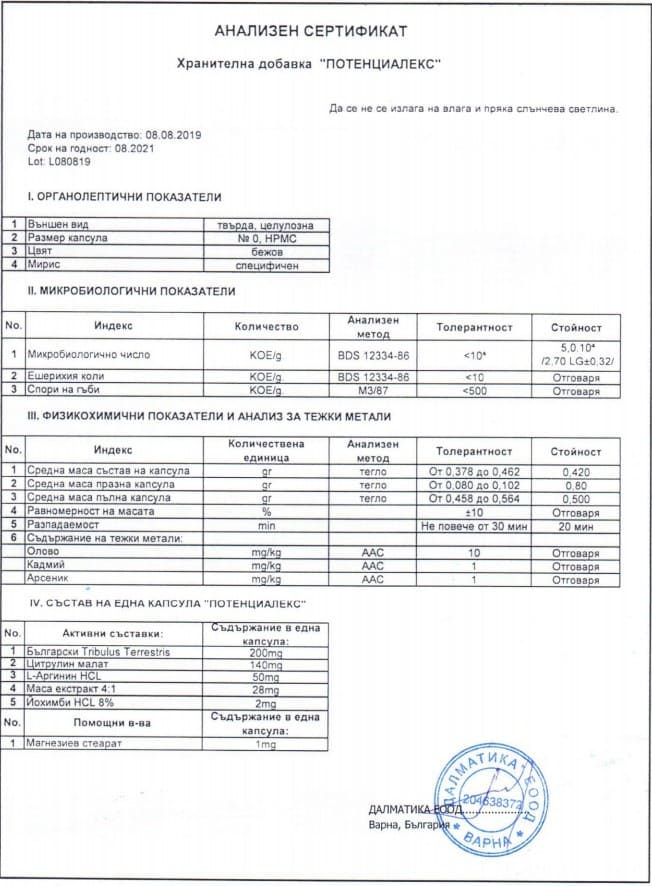

Nyirády doktor őszinte interjút adott, és elmondta, hogyan lehet egyszer és mindenkorra megoldani az erekciós problémákat anélkül, hogy megölné magát a viagrával.
A barátom sok pénzt pazarolt el a gyógyszertári mítoszok miatt. Ezért nekem olyan dolgokról kell beszélnem, amelyekről általában nem szoktak nyilvánosan beszélni.
Itt az ideje, hogy felhozzunk egy kényes témát. Minden nap több száz levelet kapok, amelyekben a következő kérdéssel fordulnak hozzám: "hogyan lehet visszakapni a kőkemény erekciót?". De még több azoknak a férfiaknak a száma, akik félnek erről kérdezni, mert szégyellik a dolgot. De a közelmúltban a barátom rengeteg pénzt pazarolt el a gyógyszerészeti mítoszok miatt és az agyonreklámozott tablettákra. Ezért úgy döntöttem, elmondom, hogyan lehet gyorsan és biztonságosan helyreállítani a merevedési funkciót, még akkor is, ha az ember már 55 éves elmúlt. Felesleges kemikáliák, műtét és orvos nélkül.
Dr. Nyirády: urológus, andrológus, a Semmelweis Egyetem urológiai klinikájának igazgatója.
Csak nézzenek rám: 59 éves koromban minden nap szexelek, és reggelenként erős erekcióval ébredek. Ismerős az érzés? Gondoljanak csak bele: merevedési zavar a 30 év feletti férfiak 62% -ánál jelentkezik. És minél idősebbek leszünk, annál nagyobb az esélye annak, hogy IMPOTENTSSÉ váljunk. De ez nem egy halálos ítélet, ha készek vagyunk cselekedni.
De nem is ez az, ami igazán megdöbbent. De az a tény, hogy a Viagra, a Sildenafil, a Cialis, a Tadafail és egyéb "potencianövelő" szereket még mindig árulnak a gyógyszertárainkban, az annál inkább. Ezek ironikus módon csak súlyosbítják az erekciós zavarokat, tönkreteszik a mellékveséket és szó szerint felfalják a szív artériáját.
A barátom szíve majdnem leállt a viagra túladagolása miatt. Szörnyű, hogy segíthettem volna neki, de még csak nem is tudtam a problémáról. Úgyhogy most elmondom mindenkinek, HOGYAN LEHET EGYSZER ÉS MINDENKORRA MEGSZABADULNI AZ IMPOTENCIÁTÓL felesleges káros anyagok nélkül. Garantálom, hogy elfelejti a hálószobai problémkat egfeljebb 4 hét alatt.
P.S. Megtiltották a cikk publikálását. A gyógyszergyárak először fenyegetőzni kezdtek, majd megpróbáltak lefizetni. De az igazság értékesebb számomra a pénznél.
«A kőkemény erekció bármilyen korban lehetséges»
Mindenki ismeri a showbusiness nagy neveit, akik idős korban is fiatal szeretőket tartanak. Ők nem csak órákon keresztül szexelnek minden káros kémiai anyag bevétele nélkül, de akár 70 éves korukban is képesek gyermeket nemzeni.
Hogy hogyan csinálják ezt? A kérdésre nagyon is jól tudom a pontos választ, ugyanis SZEMÉLYESEN én ajánlottam nekik a "". készítményt.
A 90 -es években csak nagyon sok pénzért lehetett megvásárolni. De ma már az ár nem több, mint egy reggeli egy útszéli kávézóban. És 10, de akár 50%-os kedvezménnyel is hozzájuthat az ember. De nem beszélnek róla, mert „megtiltották”. A gyógyszertárak számára előnyösebb, ha ugyanazt a 8 órán át ható viagrát árulják, mint természetes táplálékkiegészítőt kínálni, amely mindössze 4 hét alatt képes helyreállítani a potenciát.

Így néz ki a eredeti csomagolása. Higgyék el, a gyógyszertárakban nem fogják megtalálni.
A szerkesztő megjegyzése:
A 50% -BAN természetes és ártalmatlan. Szív- és érrendszeri problémák esetén is szedhető, de akár alkohollal is kombinálható.
Nekem elhihetik, a et a showbusiness minden sztárja szedi. Ez nem csak a legjobb, de az egyetlen olyan szer, amely tényleg kőkemény merevedést tud biztosítani, csak ajánlani tudom. Az orvosoknak megtiltották hogy beszéljenek róla, de én megtartottam azokat a fényképeket, amelyek LELEPLEZIK A GYÓGYSZERTÁRLÁNCOK ÁTVERÉSÉT.
Hajdú Pétert mindenki ismeri. Ő is a "et" szedi
És a múlt hónapban az egyes csatornán ki kellett volna jöjjön egy adás a híres urológussal, Sebastyén Balázzsal, ahol a ről beszélt volna. Nem hagyott semmi esélyt a viagrának, a sildenafilnek és más hasonló szereknek. De valamiért nem adták le az adást, majd az urológust egy új Lexusban látták pár nap múlva. Véletlen egybeesés? Aligha.
De lementettem a fotót a felvételről, és idézném őt, mint igazán hozzáértő szakértőt:
Mint láthatják, minden orvos tud erről a készítményről. Szégyellem magam, hogy több évig hallgattam róla. De most szeretnék helyesen cselekedni, úgyhogy mentsék le ezt a publikációt, amíg nem törlik, és vásárolják meg a "et"
Hogyan működik ""
TRIBULUS TERRESTRIS, PERUI MACA KIVONAT, L-ARGININ és L-CITRULLIN tartalmaz. Ez egy 100% -BAN természetes termék, amely visszaállítja a merevedési funkciót egy 20 éves férfi szintjére, még akkor is, ha már túl van az 55. életévén.
A egy biológiai aktivátor. Ez azt jelenti, hogy csak természetes összetevőket tartalmaz, amelyek azonnal a véráramlást a corpus cavernosumba irányítják (megjelenik az erekció, - a szerkesztő megjegyzése), és elősegítik a tesztoszteron természetes szintézisét. Vagyis miután bevette, nem csak azonnali hatást fejt ki a kő kemény merevedést ajándékoz több órán keresztül, hanem 3-4 hét alatt teljesen visszaállítja a merevedési funkciót, és úgy fog működni a szerszáma, mint egy 20 éves férfié.
Érdekes tény:
A egyedülálló
tulajdonsága, hogy minél idősebb az ember, annál jobb a hatása.
Szerkesztői
tanács:
Hogy az erekció helyreállítása mindössze egy hét alatt
megtörténjen, a szedését éhgyomorra javasolják.
- Fokozott erekció azonnali izgalommal a bevétel után.
- Fokozott nemi vágy.
- A tesztoszteron szekréció helyreállítása.
- A sperma aktivitásának növekedése (ha nem szeretne 55 év felett gyermeket, használjon fogamzásgátlót).
Ez az egyetlen olyan szer, amely káros kémiai anyagok nélkül normalizálja a tesztoszteron termelést, amit a "Clinic" orvosi központ tanulmánya is megerősített. Ebben a vizsgálatban 3700 55 és 73 éves kor közötti férfi vett részt. A válaszadók 98%-a pedig megerősítette, hogy a készítmény teljesen megoldotta az intim problémáikat.
A bevétele után a szervezet az erekciót 4 szakaszban állítja helyre:
- 7 perccel a bevétel után tartós erekció jelenik meg még teljes impotens férfiaknál is (amit a Német Urológiai Egyetem független tanulmánya is megerősített).
- 15 perc használat után a medencefenék izmai, amelyek felelősek a szex időtartamáért, megfeszülnek.
- 60-70 perc elteltével a pénisz érzékenysége nő (visszatér a normális szintre, mint egy fiatal szervezet esetében), ami erőteljes orgazmust biztosít.
- 5 óra elteltével a szex iránti vágy (a szexuális vágyra adott válasz) némileg csökken, de a következő 36 órában továbbra is magas szinten marad.

PS 8-28 napos folyamatos használat során jelentkezik a reggeli erekció is, ami a tesztoszteronszint helyreállását jelzi.
Dr. Nyirády:
Azonnal válaszolnék egy másik fontos kérdésre is: igen, a "" kúraszerű használata után az egészséges vérkeringésnek köszönhetően megnő a közösülés időtartama is. A hatása egy élethosszig tart, de a kúra megismétlésekor nem adódik össze a hatás!
A TERÁPIÁS KÚRA ANONIM KISZÁMÍTÁSA
Spóroljon meg egy csomó pénzt: nincs szüksége fizetős konzultációra. Használj az online kérdőívet, hogy kiszámolja az Ön számára szükséges optimális adagot.
Bizonyított, hogy a szedésének megkezdéséhez a legjobb időszak . Ebben az időszakban az anyagcserében bekövetkező természetes változások miatt a hatékonyság 42% -kal magasabb.
1. "A készítménnyel történő kezelés hatékonysága a szokásos metodika alapján
számítva (az 100 kezelés alatt álló betegek számából a felépült betegek száma):
98%.", A betegség megnyilvánulásainak hiánya a készítmény szedésének abbahagyása
után (a hat hónapon belüli megfigyelések eredményei szerint) 99% volt.
3.
A készítmény egy hetes használata után minden beteg észrevette a libidó és a
potencia jelentős növekedését.
4. A készítmény hozzájárult a közösülés
időtartamának meghosszabbításához az alanyok 95%-ában.
5. Nem észleltek
nem kívánatos mellékhatásokat, beleértve az allergiás reakciókat
is.
Hozzáadva 12 órával ezelőtt | Szerkesztői megjegyzés: Fontos hír! Jelenleg a program Magyarországon és vidéken fut az utolsó napot is beleértve. Az akció végéig A most akár 50%-os kedvezménnyel megkaphatja, ha részt vesz a hivatalos nyereményjátékban! Jelenleg az akciós csomagokból maradt termékek száma Magyarországon: db